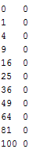
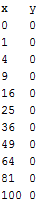
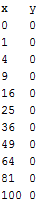
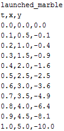
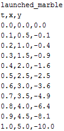
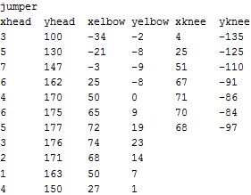
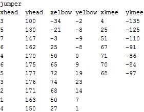
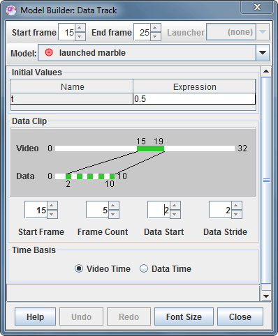

An external model is a track consisting of one or more point masses with world positions determined by a data source (model data generated in a separate program such as a spreadsheet, EJS or other modeling tool). The track enables the external model to be animated and drawn directly on a real-world video for visual comparison. Note: when comparing data with a video it is important that the model time steps match the video frame rate. For example, to compare data with a 100 fps video the time steps should be 0.01 s.
There are two types of data source:
To create an external model from a text data file, do one of the following:
 and choose External Model|Text File..., then open the file using the file chooser.
and choose External Model|Text File..., then open the file using the file chooser.To create an external model from text data on the clipboard, do one of the following:
and choose External Model|Clipboard.An external model created from pasted clipboard data can be refreshed automatically by checking the Auto-Paste checkbox on the toolbar. Tracker will then constantly monitor the clipboard contents and paste valid data automatically. If the clipboard data changes, the new data is immediately applied to the existing external model track. This makes it easy to change a model in a separate application, copy its data to the clipboard, and automatically see the changes in Tracker.
To create an external model from an EJS simulation jar file (version 5.2 or later), do one of the following:
and choose External Model|EJS Simulation..., then open the jar file containing the EJS simulation using the file chooser.The figure below shows four examples of text data suitable for an external model. Note that:



 



 



 

Most programs that collect, generate or analyze data, including spreadsheets, are able to copy and save (or export) text data that conform to these specifications.
EJS (Easy Java/Javascript Simulations) is a free authoring tool written in Java that helps non-programmers create interactive simulations for teaching and learning. EJS was created by Francisco Esquembre and, along with Tracker, is part of the Open Source Physics project. EJS can be downloaded from http://www.um.es/fem/EjsWiki/Main/Download.
Starting with EJS version 5.2, simulations can send data directly to Tracker where it is displayed as an external model. In addition, video and Tracker files can be loaded into Tracker directly from EJS. This greatly increases the potential for comparing dynamic models with videos.
For more information about creating simulations and sending data from EJS, see the EJS Wiki help pages.
Since the data source usually provides data generated by a theoretical model, an external model is treated as a type of particle model. For this reason it's user-controlled properties are displayed and edited using the Model Builder tool. To use the builder, choose Model Builder... from the external model's track menu.

Data points loaded from a data source are stored in a data point array. Each data point can be referred to by its index (starting from 0) in the array. For example, in the "launched_marble" text data example above the array would have a length of 11 with indices from 0 to 10. The data point at index 10 would have the value (t=1.0, x=5.0, y=-10.0).
The following properties are user-settable in the model builder:
For example, using the settings shown in the figure above, data point index 2 is displayed in video frame 15, index 4 in frame 16, index 6 in frame 17, index 8 in frame 18 and index 10 in frame 19 as shown in the green and white bar graphics. In this example, the data time is ignored since video time is selected as the time basis.
The points defined by a external model are point masses so each has settable mass, color, footprint and motion vector properties. This also means you can attach measuring tools to the points and add them to center of mass tracks just like any other point mass track.
When a external model defines two or more points you can connect them with lines using the Lines item in the external model's menu. With three or more points choose Close to connect the last point back to the first.